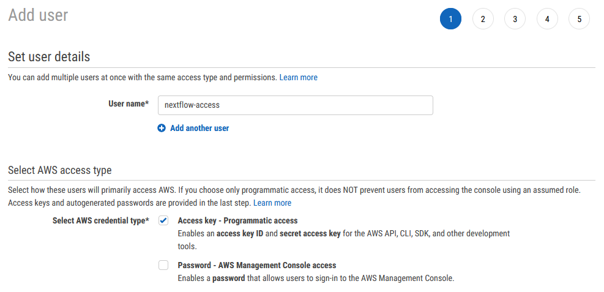
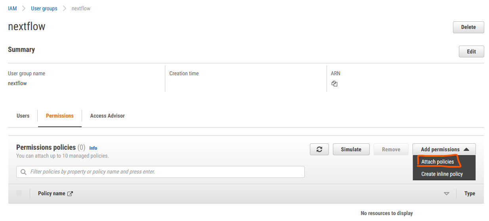
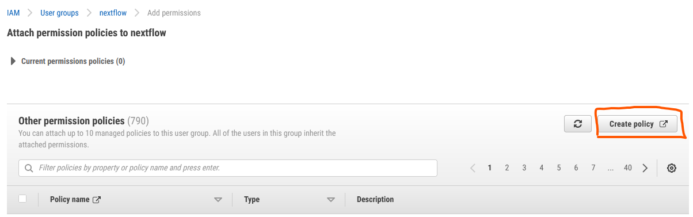
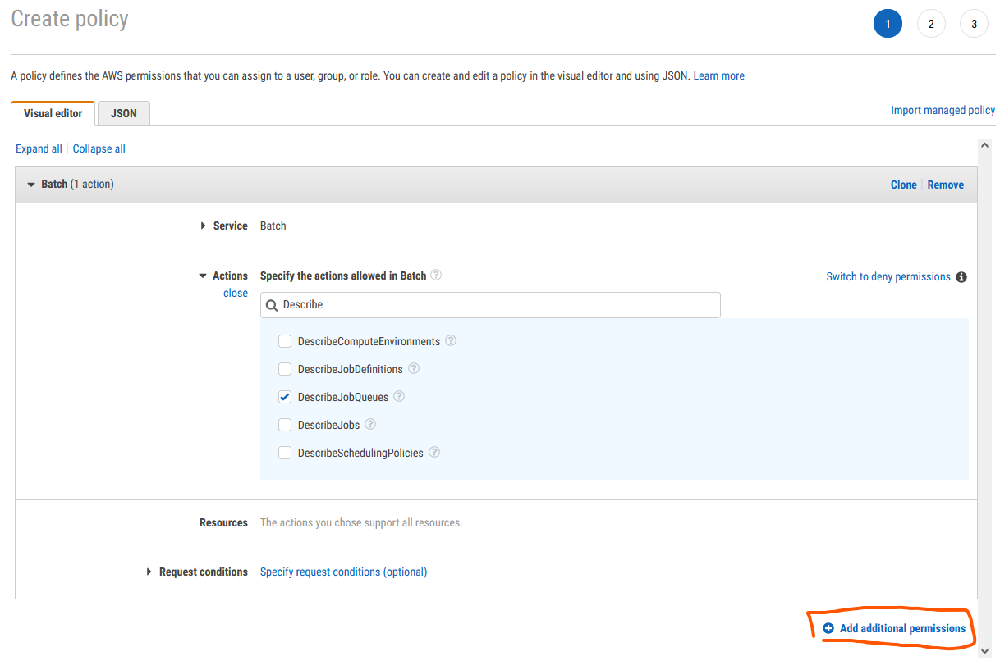
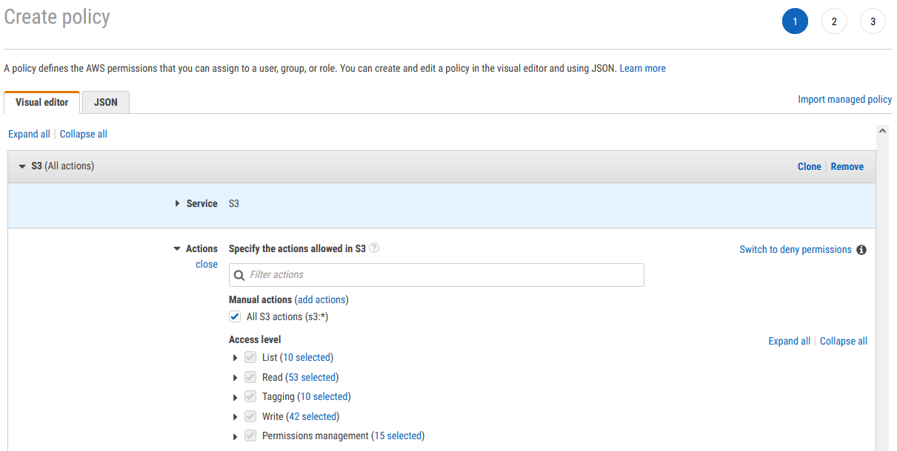
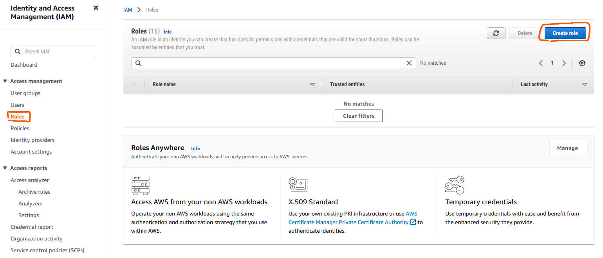
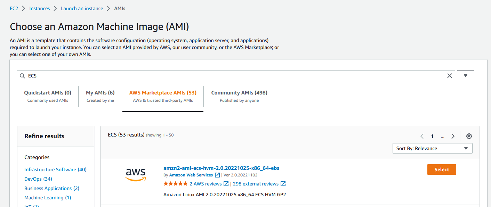
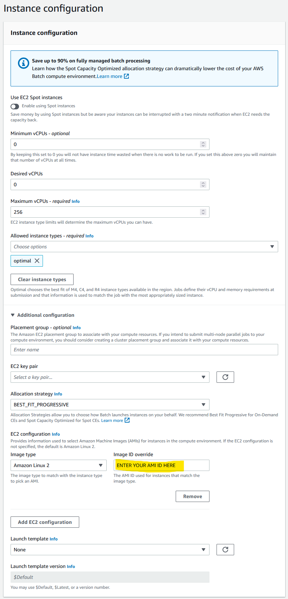

The following is a general guide on how to set up Nextflow with AWS batch as the compute environment. I would highly recommend that you use your local environment or at least a smaller test dataset for pipeline development, transferring to AWS batch when in a working production state.
Although Gandalf 🧙 trims his beard more often than Amazon updates their AWS user interface, I cannot guarantee the included menu screenshots will look the same on your system. However, hopefully they will still provide sufficient information to determine the appropriate settings and options. Reach out if you feel I need to update this guide.
IAM Setup
Firstly you need to create a new IAM with more appropriate permissions tailored to the requirements listed in Nextflow documentation. It is strongly recommended that do not use your root account to run Nextflow pipelines.
Open the IAM management console on AWS and add a new user
Enter an appropriate user name for example ‘Nextflow-access’. Under access type, select programmatic access

Next you need to create a user group for the new user to sit within. Generally, on AWS you will apply permissions to a user group rather than a specific user. Additionally, this allows you to set up multiple separate people within the ‘Nextflow group’. Again, enter an appropriate name and click Create group
Add any metadata tags if appropriate
Click Create user. You should be greeted with a new page that includes a Access Key ID and SCA (📝 take note of these keys as you will need them towards the end of this guide)
Now that you have your new user and Nextflow group you will need to apply the required permissions.
From the IAM user panel click User groups select your recently created ‘nextflow’ group, and under the permissions menu click on the Attach policy button

Click Create policy

Use the visual editor to add all the required permissions

Minimal permissions policies to be attached to the AWS account used by Nextflow are:
To interface AWS Batch:
"batch:DescribeJobQueues" "batch:CancelJob" "batch:SubmitJob" "batch:ListJobs" "batch:DescribeComputeEnvironments" "batch:TerminateJob" "batch:DescribeJobs" "batch:RegisterJobDefinition" "batch:DescribeJobDefinitions"To be able to see the EC2 instances:
"ecs:DescribeTasks" "ec2:DescribeInstances" "ec2:DescribeInstanceTypes" "ec2:DescribeInstanceAttribute" "ecs:DescribeContainerInstances" "ec2:DescribeInstanceStatus"To pull container images stored in the ECR repositories:
"ecr:GetAuthorizationToken" "ecr:BatchCheckLayerAvailability" "ecr:GetDownloadUrlForLayer" "ecr:GetRepositoryPolicy" "ecr:DescribeRepositories" "ecr:ListImages" "ecr:DescribeImages" "ecr:BatchGetImage" "ecr:GetLifecyclePolicy" "ecr:GetLifecyclePolicyPreview" "ecr:ListTagsForResource" "ecr:DescribeImageScanFindings"
You also need to add permissions for S3 so that nextlflow can pull input data and publish results. Still using the visual editor select S3 as the service and then select the All S3 actions (s3:*) check box under actions. You may get notifications of other ‘dependency’ type permissions that are required, follow the instructions to add these as well.

Add any metadata tags if appropriate
Give your new policy a name and click Create policy
Select your newly created permission policy to add to the user group and click Add permissions. Hint: you can find your new policy by 🔍searching in the filter box
To be able to use spot instances you will need to create an additional role.
Click Roles under the IAM access management menu and click Create role

Select AWS service and EC2 under common use cases, click Next
Search for AmazonEC2SpotFleetTaggingRole select it and click Next
Add a role name, e.g. AmazonEC2SpotFleetRole and click Create role
Custom Nextflow AMI
AWS batch uses Amazon Machine Images (AMIs) to initiate EC2 compute instances that will subsequently run your Nextflow processes. Nextflow tasks submitted to AWS Batch will run under the Amazon Elastic Container Service (ECS). ECS (not to be confused with EC2) uses a base Amazon ECS-optimised AMI (with docker pre-installed). Although Nextflow & Batch will control the CPU and memory resource request and allocation you need to ensure you base ECS AMI has sufficient EBS storage to hold any relevant input and working data files, such as sequence reads, indexes etc. You will also need to install the AWS CLI in the base ECS AMI to allow data movement to and from S3 buckets. To set all this up follow these steps:
Navigate to the EC2 console menu
Click Instances and then Launch Instances
Under ‘quick start’ click Browse more AMIs
Click AWS Marketplace AMIs and search for ECS
At the time of writing amzn2-ami-ecs-hvm-2.0.20221025-x86_64-ebs was the most up-to-date ECS AMI. Select it

Select the t2.micro instance type
Select and relevant key pairs and network settings based on your setup (I would recommend at a minimum a private VPC and IP-restricted connections via a bastion instance)
Ensure you have at least 30GiB storage 💾 listed under ‘Configure storage’. Also change the storage type from gp2 to gp3 (for a performance boost at no additional cost - see Matt Vaughn’s NextflowSummit 2022 talk 📽️).
NoteFor some Nextflow processes your will need more than 30GiB of EBS storage. I would recommend making additional AMIs (based on this image) for these specific tasks and assigning them to specific Batch job queues, see later on.
Click Launch instance 🚀
SSH 💻 into your new instance where you will need to install AWS CLI
Once connected run the following commands to install AWS CLI
cd $HOME sudo yum install -y bzip2 wget wget https://repo.continuum.io/miniconda/Miniconda3-latest-Linux-x86_64.sh bash Miniconda3-latest-Linux-x86_64.sh -b -f -p $HOME/miniconda $HOME/miniconda/bin/conda install -c conda-forge -y awscli rm Miniconda3-latest-Linux-x86_64.shTo verify the install was successful
$ ./miniconda/bin/aws --version aws-cli/1.19.79 Python/3.8.5 Linux/4.14.231-173.361.amzn2.x86_64 botocore/1.20.79Under the Instances menu in the EC2 console select your relevant instance and click Actions, then Images and Templates, then Create Image
Give your new image a name e.g. nextflow-30GiB-ecs-ami and click Create image
📝Take note of the AMI ID (not the name) that you just generated as you will need this later
Contrary to what is commonly written in other documentation you no longer need to expand your docker 🐋storage volume to match your allocated EBS storage size. The docker storage automatically expands on the Amazon 2 AMIs which are now default (unlike previous Amazon 1 AMIs).
Batch Environment
Now it is time to create your Batch environment which entails at least one compute environment and one job queue that Nextflow will submit processes to.
Navigate to the Batch AWS console and click on Compute environments.
Click Create and select Amazon Elastic Compute Cloud (Amazon EC2) as the compute environment.
Select Managed as the orchestration type and enter a suitable name for your new compute environment.
If this is your first time setting up a Batch environment AWS will create the relevant service role and instance role. Just ensure ‘Create new role’ is selected. Alternatively, under ‘Service role’ select AWSServiceRoleForBatch and under ‘Instance Role’ select ecsInstanceRole. Click Next Page
Leave Minimum and Desired vCPUs as 0. Maximum vCPUs controls the allowed maximum number of parallel vCPU tasks that can run in your compute environment at any one time. Increase or decrease this to an appropriate number based on your requirements.
‘Allowed instance type’ allows you to control the type of instances that AWS is allowed to try and run your jobs on. Your CPU and memory requirements defined in your Nextflow config will apply a second tier of filtering (i.e. if your memory request is higher than an allowed instance type, obviously that instance type won’t be used). You can leave this as ‘optimal’ and AWS will attempt to find the best instance type match to your CPU and memory request.
NoteAWS will generally group multiple jobs onto the one large instance, however, this can result in errors, particularly from noisy neighbors, and I/O and/or network intensive tasks.
If you want to prevent AWS from grouping multiple jobs onto the one larger instance, then you need to specifically define smaller instances types, e.g. r6i.xlarge, r6i.2xlarge, to prevent AWS using super instances such as r6i.24xlarge r6i.32xlarge.
To use spot instances toggle the Use EC2 Spot instances button at the top and define your maximum cut-off for on-demand price under ‘Maximum % on-demand price’. Under ‘spot fleet role’ you will also need to select the AmazonEC2SpotFleetRole role that you created earlier.
Under ‘Additional configuration’ you can define the allocation strategy
BEST_FIT(default) AWS Batch selects an instance type that best fits the needs of the jobs with a preference for the lowest-cost instance type. If additional instances of the selected instance type aren’t available, AWS Batch waits for the additional instances to be available. If there aren’t enough instances available, or if the user is reaching the Amazon EC2 service quotas, then additional jobs don’t run until currently running jobs are complete. This allocation strategy keeps costs lower but can limit scaling. If you’re using Spot Fleets withBEST_FIT, the Spot Fleet IAM Role must be specified.BEST_FITisn’t supported when updating compute environments. For more information, see Updating compute environments.BEST_FIT_PROGRESSIVEAWS Batch selects additional instance types that are large enough to meet the requirements of the jobs in the queue. Instance types with a lower cost for each unit vCPU are preferred. If additional instances of the previously selected instance types aren’t available, AWS Batch selects new instance types.SPOT_CAPACITY_OPTIMIZEDAWS Batch selects one or more instance types that are large enough to meet the requirements of the jobs in the queue. Instance types that are less likely to be interrupted are preferred. This allocation strategy is only available for Spot Instance compute resources.Under ‘EC2 configuration’ click Add EC2 configuration and select Amazon Linux 2 as the image type and paste the AMI ID that you created earlier in the ‘Image ID override’ box.

Click Next page and enter the appropriate network configuration for your VPC
Click Next page, check your settings and then click Create compute environment
Still within the Batch AWS console and click on Job queues.
- Click Create and select ‘Amazon Elastic Compute Cloud (Amazon EC2)’ as the compute environment.
- Enter a suitable name for your new job queue (📝 take note of this name you will need it later)
- Under ‘Connected compute environments’ select the compute environment that you just created
- Click Create job queue
You will want Nextflow to use an S3 bucket to store all the working files and results rather than a local connection.
- Navigate to the S3 service under the AWS management console and create a new private bucket in your relevant region.
- Create a new folder within the bucket to serve as the Nextflow working directory (📝 take note of the S3 URI address as you will need this next)
Nextflow Config
Now all you now need to do is set up your Nextflow config with the relevant details of your AWS setup. An example of initial config file is:
//Select the awsbatch executor
process.executor = 'awsbatch'
//Name of the AWS Batch job queue that you just created
process.queue = 'my-batch-queue'
//region where we want to run this in
aws.region = 'ap-southeast-2'
//Path to the aws cli tool you installed in your AMI
aws.batch.cliPath = '/home/ec2-user/miniconda/bin/aws'
//S3 working directory that you just created
workDir = 's3://bucket_you_created/work/'The last step is setting up your security credentials 🔐 to allow Nextflow to securely communicate and submit jobs to AWS batch. The best approach is to install AWS CLI locally (or in a EC2 instance if submitting from EC2).
Then run AWS configure and enter the relevant Key ID, Access Key, and Region when prompted. These are the keys that AWS provided when you generated your Nextflow programmatic user at the start of this guide.
DO NOT store your credentials in your Nextflow configuration file as some tutorials suggest.
🗒️Additional Notes:
AWS batch jobs can take a few minutes to spin up, be patient before assuming you have set something up wrong
If you are using spot instances and your maximum % on-demand price is set too low your jobs make take a long time to start or may not run at all
You can view the log stream of your jobs by clicking through the ‘Running’ job numbers in the Batch dashboard and clicking the Log stream name - helpful to determine where a job is up to in a script
The Nextflow slack channel is a great place to raise any questions if you are still experiencing issues after following this setup guide, or want to experiment with some more advanced configurations and setups.
Common errors
Below are a list of common errors. Although the proposed solution has been demonstrated to work it may not always work in your specific scenario.
Task failed to start - CannotPullContainerError: context canceled
Proposed solution: Increase your AMI EBS storage.